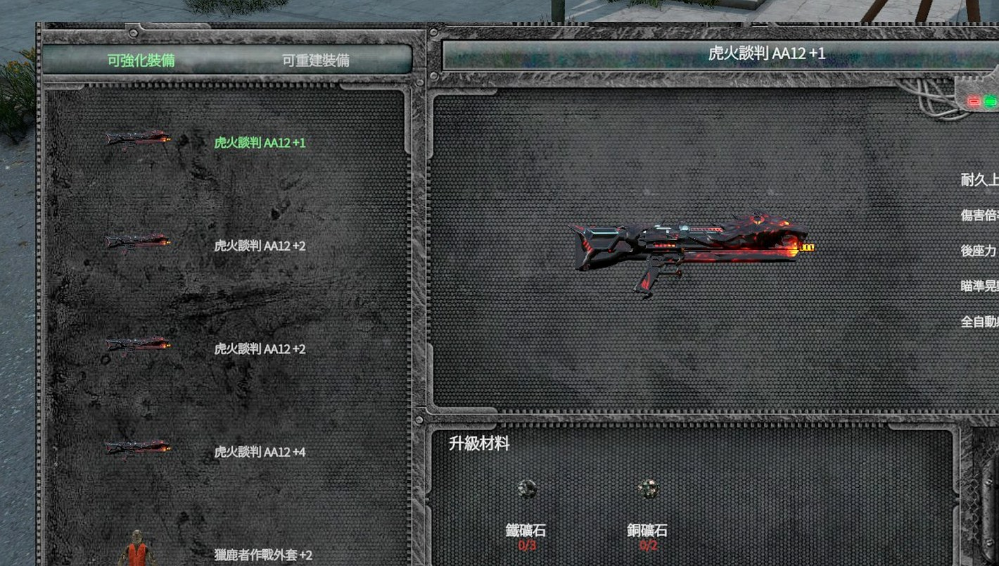

尋找礦脈
探索地圖中的礦脈節點，準備適合的採礦工具後開始採集。
從礦脈採集原料，經過熔煉、寶石切割與鐵砧鍛造，將普通資源逐步轉化成高階製作與裝備強化材料。
挖礦系統不是只把礦石賣掉。採到的礦石與寶石會進入不同加工路線，最後可用於高階製作、特殊礦錠、進階礦鎬，以及 AshZone 的裝備強化系統。
玩家實際遊玩時可依照下面順序處理資源。
探索地圖中的礦脈節點，準備適合的採礦工具後開始採集。
礦脈可產出金屬礦石、硫磺礦石、未加工寶石等資源；實際掉落依伺服器設定。
金屬礦石送往熔煉爐；未加工寶石送往研磨石，進入品質升階流程。
熔煉後的金屬礦粒可在鐵砧鍛造成礦錠，並繼續製作更高階材料。
高品質寶石與金屬材料可進一步製作融合錠、特殊材料與進階採礦工具。
部分加工後的寶石與高階材料會作為 AshZone 裝備強化系統的重要消耗材料。
每種設備負責不同階段，缺一就無法完成完整製作循環。
將銅、黃金、鐵、銀、錫、鈾等礦石熔煉成對應金屬礦粒。使用時需要丙烷氣瓶與丙烷連接管。
切割與拋光未加工寶石。需要安裝研磨輪；目前 AshZone 已啟用寶石切割小遊戲，研磨後會隨機得到瑕疵、標準或完美品質。
使用鍛造錘將熔煉完成的礦粒鍛造成礦錠，並進一步製作融合錠與高階材料。
六種一般金屬都遵循「礦石 → 礦粒 → 10 礦粒 → 1 礦錠」的主流程。
以下寶石圖已重新裁切與強化處理，用來辨識各類寶石外觀；玩家頁面不顯示管理端物品代碼。

未加工翡翠 → 瑕疵切割翡翠 → 標準切割翡翠 → 完美切割翡翠
研磨後可隨機得到不同品質；瑕疵與標準品質仍可 3 合 1 升階。
未加工琥珀 → 瑕疵切割琥珀 → 標準切割琥珀 → 完美切割琥珀
研磨後可隨機得到不同品質；瑕疵與標準品質仍可 3 合 1 升階。
未加工堇青石 → 瑕疵切割堇青石 → 標準切割堇青石 → 完美切割堇青石
研磨後可隨機得到不同品質；瑕疵與標準品質仍可 3 合 1 升階。
未加工紫水晶 → 瑕疵切割紫水晶 → 標準切割紫水晶 → 完美切割紫水晶
研磨後可隨機得到不同品質；瑕疵與標準品質仍可 3 合 1 升階。
未加工海藍寶石 → 瑕疵切割海藍寶石 → 標準切割海藍寶石 → 完美切割海藍寶石
研磨後可隨機得到不同品質；瑕疵與標準品質仍可 3 合 1 升階。
未加工紅寶石 → 瑕疵切割紅寶石 → 標準切割紅寶石 → 完美切割紅寶石
研磨後可隨機得到不同品質；瑕疵與標準品質仍可 3 合 1 升階。
未加工綠松石 → 瑕疵切割綠松石 → 標準切割綠松石 → 完美切割綠松石
研磨後可隨機得到不同品質；瑕疵與標準品質仍可 3 合 1 升階。
未加工彩色鑽石 → 瑕疵切割彩色鑽石 → 標準切割彩色鑽石 → 完美切割彩色鑽石
研磨後可隨機得到不同品質；瑕疵與標準品質仍可 3 合 1 升階。目前伺服器已啟用寶石切割小遊戲，研磨未加工寶石時會直接抽出三種品質。
3 顆瑕疵切割寶石 → 1 顆標準切割寶石；3 顆標準切割寶石 → 1 顆完美切割寶石。因此不必把抽到的瑕疵品質丟掉，可以累積後再升階。由於研磨本身可能直接產出標準或完美品質，因此不再使用「固定 9 顆原石才有 1 顆完美」的說法。
所有寶石共用相同的隨機切割機率與 3 合 1 升階規則。
| 寶石 | 原石 | 瑕疵 | 標準 | 完美 |
|---|---|---|---|---|
| 翡翠 | 未加工翡翠 | 50%：瑕疵切割翡翠 | 35%：標準切割翡翠 | 15%：完美切割翡翠 |
| 琥珀 | 未加工琥珀 | 50%：瑕疵切割琥珀 | 35%：標準切割琥珀 | 15%：完美切割琥珀 |
| 堇青石 | 未加工堇青石 | 50%：瑕疵切割堇青石 | 35%：標準切割堇青石 | 15%：完美切割堇青石 |
| 紫水晶 | 未加工紫水晶 | 50%：瑕疵切割紫水晶 | 35%：標準切割紫水晶 | 15%：完美切割紫水晶 |
| 海藍寶石 | 未加工海藍寶石 | 50%：瑕疵切割海藍寶石 | 35%：標準切割海藍寶石 | 15%：完美切割海藍寶石 |
| 紅寶石 | 未加工紅寶石 | 50%：瑕疵切割紅寶石 | 35%：標準切割紅寶石 | 15%：完美切割紅寶石 |
| 綠松石 | 未加工綠松石 | 50%：瑕疵切割綠松石 | 35%：標準切割綠松石 | 15%：完美切割綠松石 |
| 彩色鑽石 | 未加工彩色鑽石 | 50%：瑕疵切割彩色鑽石 | 35%：標準切割彩色鑽石 | 15%：完美切割彩色鑽石 |
這一段已依實際模組 Recipe 腳本核對，不再只顯示「寶石對應哪種融合錠」。以下全部在鐵砧製作。
第一階1 顆銅礦錠 + 10 顆瑕疵切割琥珀→ 1 顆瑕疵青銅礦錠
第二階2 顆瑕疵青銅礦錠 + 5 顆標準切割琥珀→ 1 顆標準青銅礦錠
第三階3 顆標準青銅礦錠 + 2 顆完美切割琥珀→ 1 顆完美青銅礦錠
第一階1 顆鐵礦錠 + 10 顆瑕疵切割翡翠→ 1 顆瑕疵鋼礦錠
第二階2 顆瑕疵鋼礦錠 + 5 顆標準切割翡翠→ 1 顆標準鋼礦錠
第三階3 顆標準鋼礦錠 + 2 顆完美切割翡翠→ 1 顆完美鋼礦錠
第一階1 顆鈾礦錠 + 10 顆瑕疵切割堇青石→ 1 顆瑕疵複合礦錠
第二階2 顆瑕疵複合礦錠 + 5 顆標準切割堇青石→ 1 顆標準複合礦錠
第三階3 顆標準複合礦錠 + 2 顆完美切割堇青石→ 1 顆完美複合礦錠
第一階1 顆鐵礦錠 + 10 顆瑕疵切割紫水晶→ 1 顆瑕疵虛空礦錠
第二階2 顆瑕疵虛空礦錠 + 5 顆標準切割紫水晶→ 1 顆標準虛空礦錠
第三階3 顆標準虛空礦錠 + 2 顆完美切割紫水晶→ 1 顆完美虛空礦錠
第一階1 顆黃金礦錠 + 10 顆瑕疵切割海藍寶石→ 1 顆瑕疵琥珀金礦錠
第二階2 顆瑕疵琥珀金礦錠 + 5 顆標準切割海藍寶石→ 1 顆標準琥珀金礦錠
第三階3 顆標準琥珀金礦錠 + 2 顆完美切割海藍寶石→ 1 顆完美琥珀金礦錠
第一階1 顆鈾礦錠 + 10 顆瑕疵切割紅寶石→ 1 顆瑕疵紅寶石礦錠
第二階2 顆瑕疵紅寶石礦錠 + 5 顆標準切割紅寶石→ 1 顆標準紅寶石礦錠
第三階3 顆標準紅寶石礦錠 + 2 顆完美切割紅寶石→ 1 顆完美紅寶石礦錠
第一階1 顆錫礦錠 + 10 顆瑕疵切割綠松石→ 1 顆瑕疵稜彩礦錠
第二階2 顆瑕疵稜彩礦錠 + 5 顆標準切割綠松石→ 1 顆標準稜彩礦錠
第三階3 顆標準稜彩礦錠 + 2 顆完美切割綠松石→ 1 顆完美稜彩礦錠
第一階1 顆銀礦錠 + 10 顆瑕疵切割彩色鑽石→ 1 顆瑕疵水晶礦錠
第二階2 顆瑕疵水晶礦錠 + 5 顆標準切割彩色鑽石→ 1 顆標準水晶礦錠
第三階3 顆標準水晶礦錠 + 2 顆完美切割彩色鑽石→ 1 顆完美水晶礦錠
只有完美融合礦錠才能進入第四階，之後逐步合成終局材料。
這條路線和上面的八種融合礦錠是不同支線，從鈾礦錠開始一路升到銥元素礦錠。
這條特殊金屬線依 Freeze 官方 Mining Support 的 Anvil Recipes 核對。寶石在這條舊式配方中以切割寶石作為材料，實際可用品質仍以伺服器當前版本為準。
挖礦系統的價值會延伸到 AshZone 裝備強化。玩家在強化介面中可直接看到目前裝備、成功率、能力變化與指定升級材料，礦石與寶石因此不只是收藏品，而是裝備成長的重要資源。

採到礦石先想「熔煉爐 → 礦粒 → 鐵砧 → 礦錠」。
採到寶石先到研磨石切割；有機會直接得到瑕疵、標準或完美，低階品質還能 3 合 1 升階。
拿到完美寶石優先保留給高階融合製作與 AshZone 裝備強化。